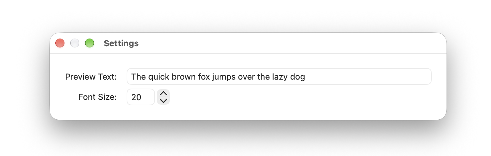

Settings
The settings allows you to customize the following:
Preview Text:
Change the text used for previewing fonts. See
Font Preview
.
Font Size:
Change the size of the text used for previewing fonts. See
Font Preview
.
